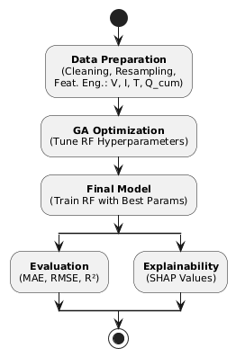
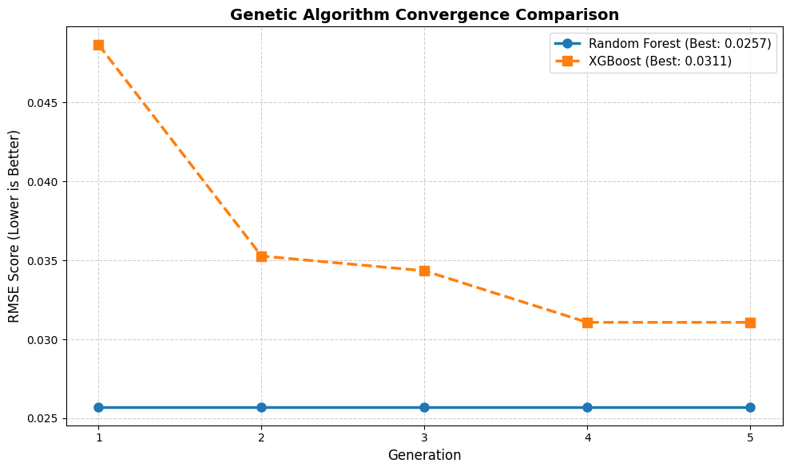
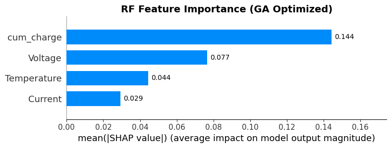
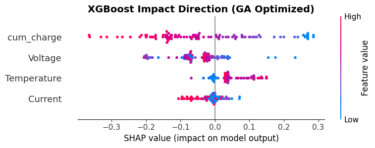

for Battery State-of-Charge Estimation
Braincore Indonesia · Universitas Esa Unggul · Brawijaya University
An Integrated, Reproducible Pipeline
Gradient-free hyperparameter optimization.
Random Forest and XGBoost as predictors.
Game-theoretic feature attribution.
Prior work addresses optimization and interpretability in isolation. This framework jointly delivers predictive accuracy and feature-level transparency — a requirement for safety-critical BMS.

Commercial Li-ion pouch cells, high-precision cycler, public dataset.
| Parameter | Unit | Range | Mean |
|---|---|---|---|
| Time | s | 0 → 307,513 (~85h) | — |
| Current | A | −20.15 → +33.20 | −0.16 |
| Voltage | V | 2.998 → 4.209 | 3.85 |
| Temperature | °C | 25.1 → 28.1 | 26.3 |
665,822 measurement points spanning ~85 hours of operation.
Source dataset from Braun et al. (2022), Journal of Power Sources, describing “fresh and pre-aged lithium-ion battery single cells operated under well-defined laboratory conditions.” doi:10.1016/j.jpowsour.2022.231828
| Subset | Source | Samples |
|---|---|---|
| Training | Fresh (80%) | 286,647 |
| Validation | Fresh (20%) | 71,662 |
| Testing | Aged (100%) | 307,513 |
| Total | Fresh + Aged | 665,822 |
Fixed seed (42) for full reproducibility.
Cross-Distribution Test
The model trains on healthy cells and is evaluated on degraded ones — a stricter generalization test than random splitting.
| Condition | Samples | Percentage |
|---|---|---|
| Charging (\(I > 0\)) | 312,312 | 46.9% |
| Discharging (\(I < 0\)) | 349,908 | 52.6% |
| Rest (\(I = 0\)) | 3,602 | 0.5% |
| Total | 665,822 | 100.0% |
The dataset is approximately balanced, supporting unbiased training across both operating regimes.
The balance is verified from the sign of the instantaneous current signal prior to training.
\[Q_{cum}(t) = \int_{0}^{t} I(\tau)\, d\tau\]
Ground-truth SoC from hybrid Coulomb counting + OCV correction.
Min-Max scaling to \([0, 1]\) applied to all features.
n_estimators, max_depth, min_samples_split/leaf, max_features.n_estimators, max_depth, learning_rate, subsample, colsample, gamma, reg_alpha, reg_lambda.XGBoost exposes a wider and more tightly coupled search space, which helps explain why metaheuristic tuning yields strong gains.
| Scenario | Description |
|---|---|
| RF Baseline | Default hyperparameters |
| RF-GA | RF + Genetic Algorithm |
| XGB Baseline | Default hyperparameters |
| XGB-GA | XGBoost + Genetic Algorithm |
| Model | Config | MAE | RMSE | \(R^2\) |
|---|---|---|---|---|
| Random Forest | Baseline | 0.1012 | 0.1829 | 0.4242 |
| Random Forest | GA-Optimized | 0.0035 | 0.0257 | 0.9885 |
| XGBoost | Baseline | 0.1015 | 0.1710 | 0.4968 |
| XGBoost | GA-Optimized | 0.0084 | 0.0311 | 0.9832 |
Key Message
\(R^2\) increases from ~0.42–0.50 to ~0.98–0.99 after GA tuning, with RF-GA delivering the best overall accuracy.
| Model | Optimization | Time (s) |
|---|---|---|
| RF baseline | default | 44.27 |
| RF-GA | Genetic Algorithm | 2,633.01 |
| XGB baseline | default | 6.55 |
| XGB-GA | Genetic Algorithm | 332.05 |

RMSE decreases rapidly across five generations
Population = 10 · Generations = 5 · Mutation = 0.1 · Elitism = 2.


treelite.Open Q & A
Questions and discussion are welcome.
Eric Julianto · Dian Alhusari · Safrizal Ardana Ardiyansa
Braincore Indonesia · Universitas Esa Unggul · Universitas Brawijaya
EECCIS 2026